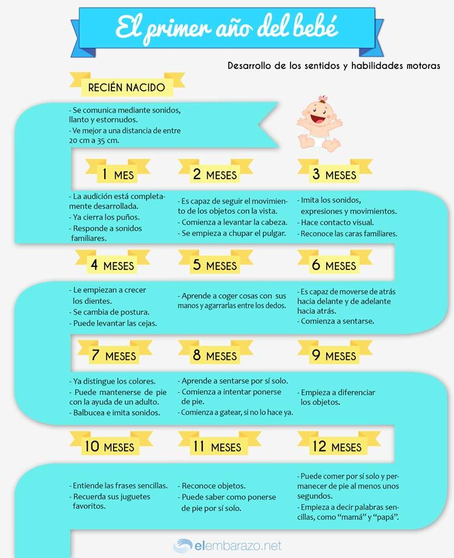

Hitos del Recién Nacido 🍼

0-3 meses:
Motor grueso: Levanta la cabeza brevemente cuando está boca abajo; movimientos suaves de brazos y piernas.
Motor fino: Cierra la mano en puño; comienza a agarrar objetos por reflejo.
Lenguaje: Llora para comunicarse; empieza a hacer sonidos de gorgojeo.
Social / emocional: Sonríe en respuesta a la voz o cara de los padres; reconoce caras familiares.
4-6 meses:
Motor grueso: Se da la vuelta de la barriga a la espalda; sostiene la cabeza firme.
Motor fino: Lleva objetos a la boca; sostiene juguetes con las manos.
Lenguaje: Balbucea sílabas (“ba”, “da”); responde a sonidos familiares.
Social / emocional: Muestra emociones claras; reconoce a personas conocidas.
7-9 meses:
Motor grueso: Se sienta sin apoyo; comienza a gatear o arrastrarse.
Motor fino: Pinza con el pulgar e índice; pasa objetos de una mano a otra.
Lenguaje: Balbucea combinando sílabas; reconoce su nombre.
Cognitivo: Busca objetos escondidos; explora con las manos y la boca.
Social / emocional: Manifiesta ansiedad ante extraños; juega a “palmas” o “cucu”.
10-12 meses:
Motor grueso: Se pone de pie con apoyo; da pasos con ayuda o solo.
Motor fino: Usa la pinza fina (pulgar e índice) para tomar objetos pequeños.
Lenguaje: Dice palabras simples (“mamá”, “papá”); entiende órdenes sencillas.
Cognitivo: Imita acciones simples; señala objetos para llamar la atención.
Social / emocional: Muestra preferencias por personas; puede mostrar afecto de manera intencional.